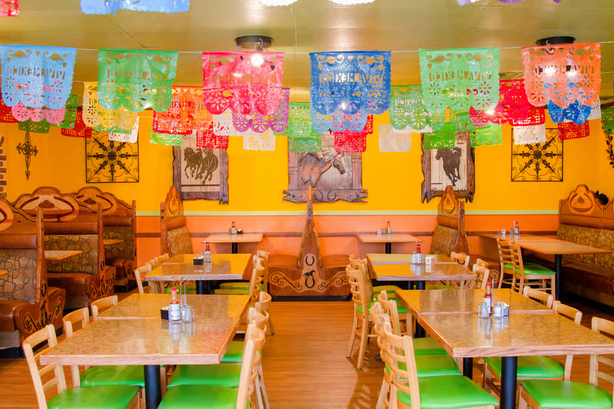
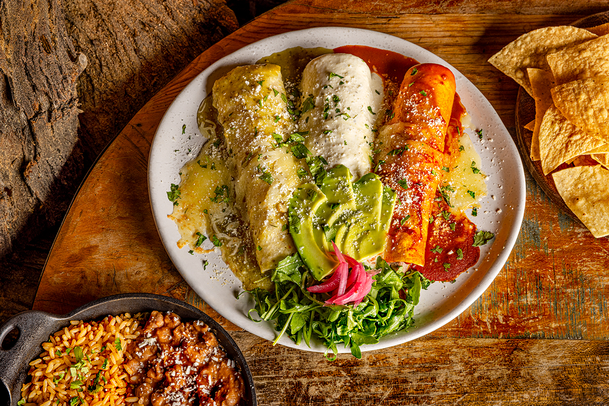
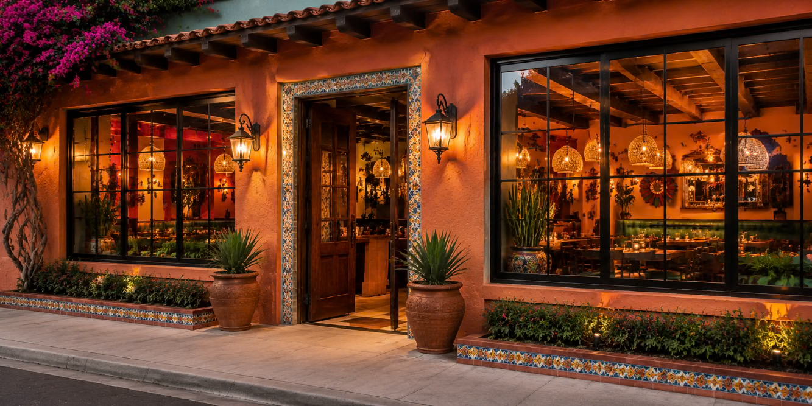

Our Story

Casa Sol Mexican Kitchen celebrates the rich flavors, traditions, and culture of Mexican cuisine. Inspired by generations of homemade recipes and the joy of sharing a meal, we bring authentic flavors and fresh ingredients together to create a welcoming dining experience.
Whether you're joining us for a family dinner, a casual lunch, or a celebration with friends, our goal is to make every visit feel like coming home.
Our Menu

From traditional favorites to house specialties, our menu brings together the vibrant ingredients and flavors that make Mexican cuisine so special. Every dish is inspired by the balance of fresh ingredients, traditional preparation, and bold seasoning.
- Street Tacos: Warm corn tortillas filled with seasoned meat, fresh cilantro, onions, and salsa.
- Enchiladas: Soft corn tortillas filled with your choice of filling and topped with flavorful sauce.
- Carne Asada: Grilled marinated steak served with traditional rice, beans, and fresh toppings.
- Chiles Rellenos: Roasted peppers filled with cheese and served with savory sauce.
Visit Us

Good food is even better when shared. At Casa Sol, we believe that every meal is an opportunity to connect, celebrate, and create lasting memories. Our inviting atmosphere and flavorful menu make us a great place to gather with family and friends.
Whether you're stopping by for a quick lunch or enjoying a relaxed evening with loved ones, we'd love to welcome you!
Restaurant information:
- Location: Phoenix, Arizona
- Dining: Lunch and dinner
- Atmosphere: Casual, family-friendly dining
- Special occasions: Family gatherings and celebrations